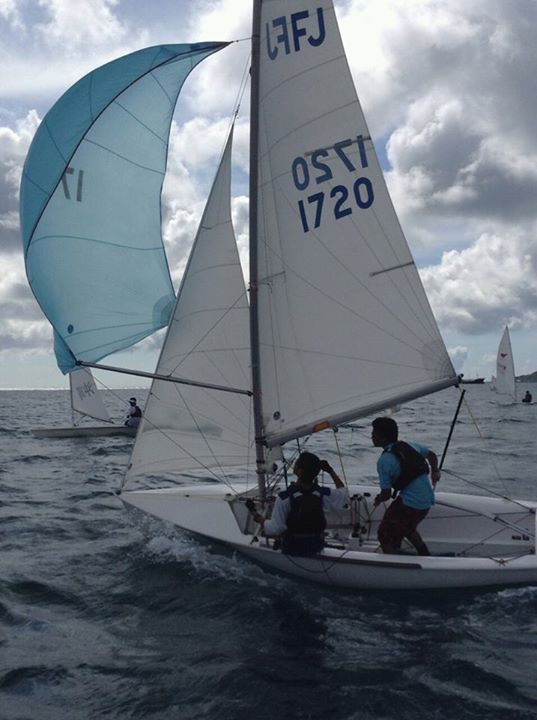
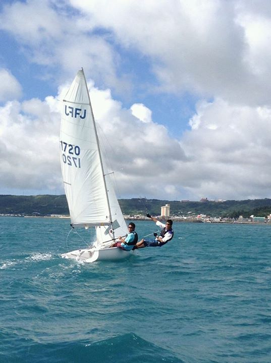
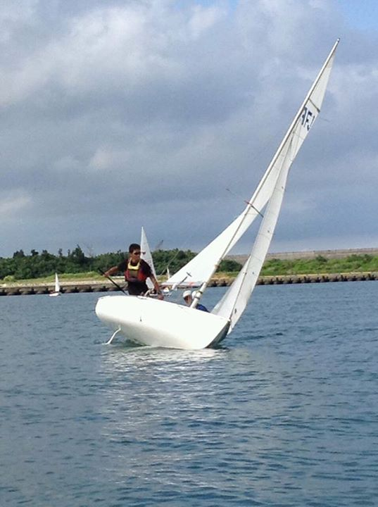
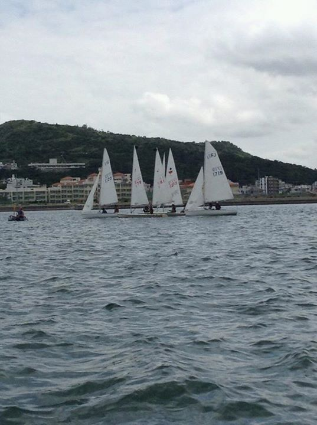
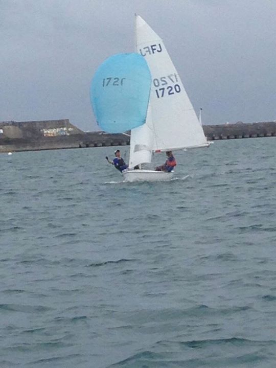

ヨット





ヨットは、風を利用して番号が書かれたマークを番号順に回ってゴールした順位を競う競技です。風の変化を読んだり、それを利用して相手を抑えたりして相手の前を走ったりするのでゲーム的な部分が多い競技です。
ヨットは、風を利用して番号が書かれたマークを番号順に回ってゴールした順位を競う競技です。風の変化を読んだり、それを利用して相手を抑えたりして相手の前を走ったりするのでゲーム的な部分が多い競技です。